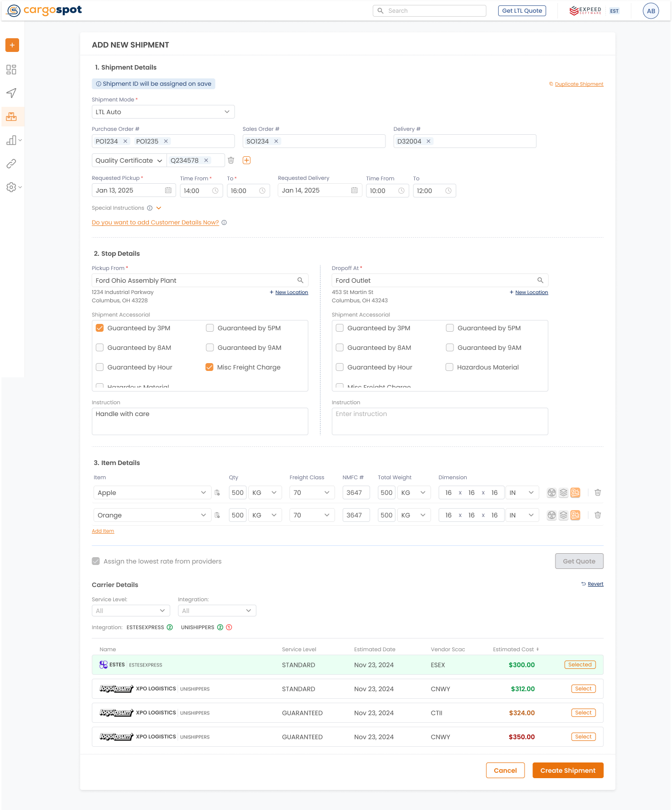

Case Study · Logistics · Workflow Design
Cargospot — Shipment Creation Workflow Optimization
Streamlining data entry for high-volume logistics operations — reducing the steps required to create a shipment and improving efficiency for operational users
Context
Cargospot is a shipment management product. This case study focuses specifically on improving the shipment creation workflow for operational users.
Problem
Operational users were slowed down by the workflow itself
Logistics operations teams needed to create shipments quickly and repeatedly throughout the day. The existing workflow broke this process into discrete steps — requiring users to navigate through multiple screens to complete a single shipment entry.
- Six separate screens required to complete one shipment entry
- Each step transition interrupted the data entry rhythm
- Critical shipment details were distributed across steps, reducing visibility
- Errors at a late step forced users to navigate back through the workflow
Key Insight“Operational users were creating shipments repeatedly — the workflow needed to support speed, not onboarding.”
Initial Design Approach
The first design: a step-by-step guided flow
The initial design followed a structured, progressive approach — breaking the shipment creation process into six sequential steps to reduce complexity at each stage.
Six sequential steps — each screen revealed the next stage only after the current one was completed.
What Didn’t Work
The step approach worked for new users — not experienced operators
- Experienced users found the step-by-step structure unnecessarily restrictive
- Navigating between steps interrupted the rhythm of high-volume data entry
- Updating a detail from an earlier step required navigating backwards through the flow
- The Review step added overhead without meaningfully reducing errors
Design Shift
From sequential steps to continuous data entry
Instead of forcing users through a structured sequence, the workflow was redesigned around faster, continuous data entry. All shipment fields were consolidated into a single, scannable view — allowing operational users to move through the form at their own pace, without step-to-step navigation overhead.
Design Solution
One continuous form. All fields visible. No navigation required.
The redesigned workflow consolidated all six steps into a single, scrollable form. Users can enter shipment data from top to bottom without leaving the screen — and can revisit any field at any point during entry.

- 1 Single continuous form — all shipment fields available without step navigation.
- 2 Persistent shipment summary — key details stay visible throughout entry.
- 3 Inline field groups — stops, items, and charges entered in context.
- 4 Non-linear editing — any field editable at any point without back-navigation.
Redesigned shipment creation workflow — consolidated from six steps into a single continuous form to reduce navigation and improve data entry efficiency for operational users.
Key Design Decisions
Four decisions that defined the redesign
1Single continuous form
Consolidating all six steps into one scrollable form removed the navigation overhead that slowed experienced users. Fields are grouped logically — not gated by step progression.
2Persistent shipment summary
A persistent summary panel keeps critical details — route, customer, and charge totals — visible throughout entry, reducing the need to scroll back to verify information already entered.
3Inline field groups
Stops, items, and charges are entered inline within the form rather than as separate screens. Related fields stay grouped together, reducing the cognitive load of switching between contexts.
4Non-linear editing
Users can jump to any field at any point during entry without retracing previous steps — particularly important for high-volume users who often have partial information at the start of entry.
Outcome
A faster, more efficient creation workflow
Consolidating the workflow reduced the navigation required per shipment entry and gave operational users the continuous, uninterrupted data entry experience they needed for high-volume work.
- Reduced navigation steps required per shipment entry
- Improved data entry efficiency for high-volume operational users
- Designed to reduce error risk by improving field visibility and context throughout entry
- Workflow pattern applied across other high-volume data entry screens in the product
Key Takeaways
What this project reinforced
Design for operational velocity
→ High-volume users prioritize speed and continuity over structured guidance
Consolidation reduces cognitive load
→ Keeping all relevant fields visible eliminates the memory cost of multi-step flows
Structure should serve the user’s expertise
→ Step-by-step flows suit onboarding — not daily operational work